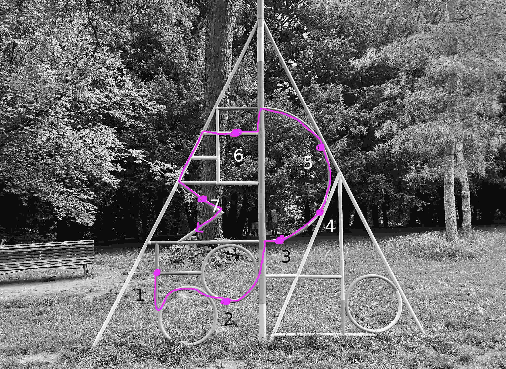
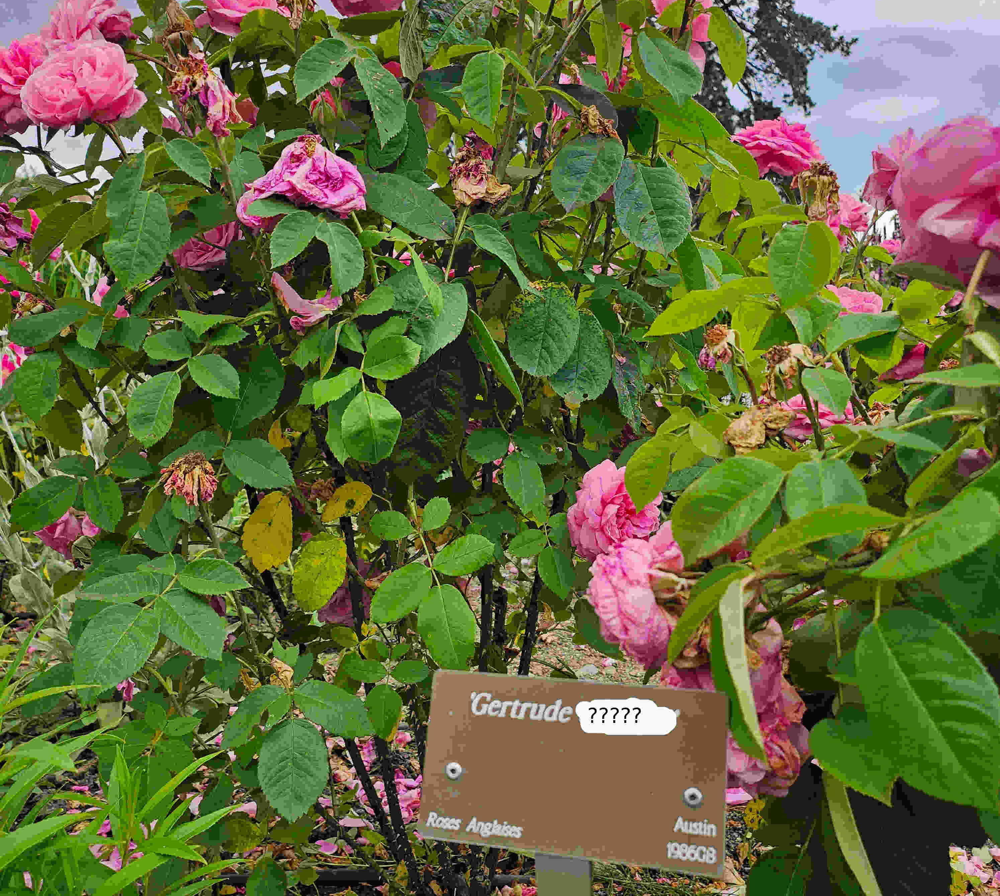
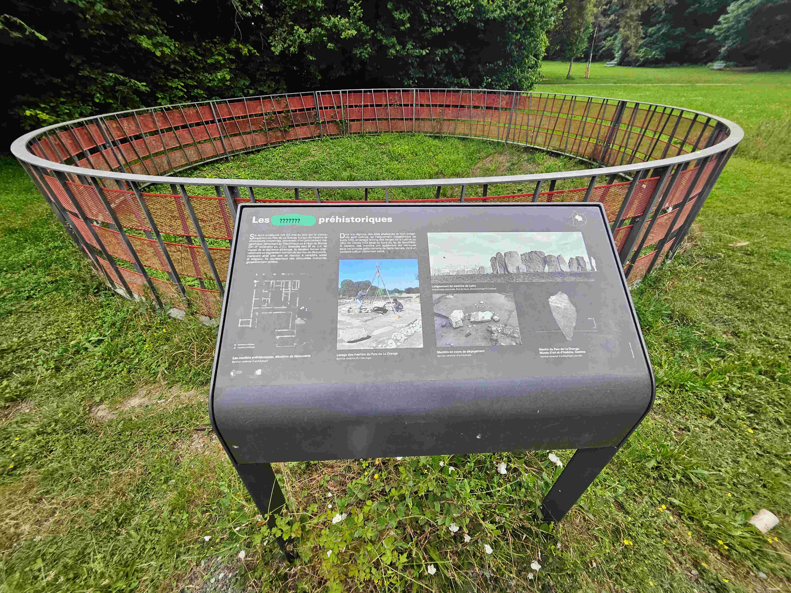
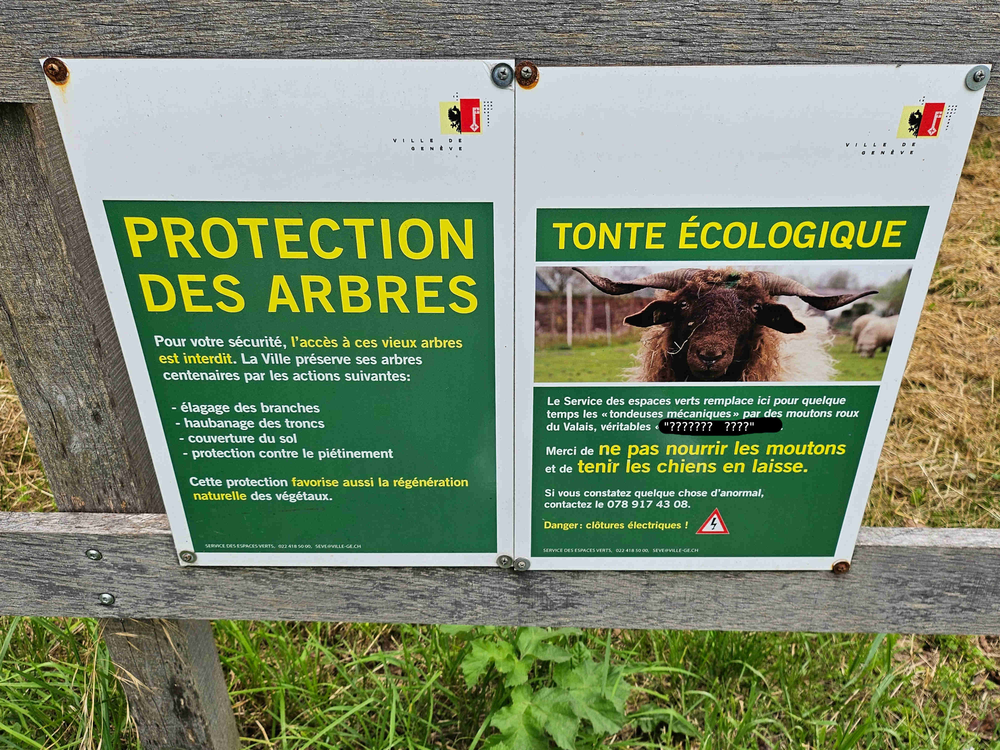

🕵️ Suspect : L'Agent d'entretien
🔙 Retour aux suspects
🧑🏫 Fiche Suspect
Nom : Huley
Prénom : HANK
Âge : 51 ans
Profession : Agent d'entretien
Particularités :Discret et toujours présent dans le parc, l'agent d'entretien connaît les moindres recoins du lieu. Il aurait pu cacher quelque chose… ou avoir vu quelque chose qu’il ne fallait pas. À nous de le découvrir.
Énigme 1 - L'Arbre
Une source anonyme a signalé qu'un mot aurait été gravé sur un arbre dans la zone boisée du parc. Selon elle, ce mot serait lié à un échange suspect entendu entre deux individus tard le soir.
Le mot serait : complice. Il pourrait ouvrir la voie vers une piste capitale.

Enigme 1 Résolu
Enigme 2
En enquêtant autour de l’aire de jeux, un témoin a raconté avoir vu l’agent dessiner avec de la craie des motifs colorés. Était-ce un simple jeu ou un code secret ?
En observant les couleurs sur les jeux pour enfants, vous découvrirez peut-être un message laissé à destination d’un complice…

Enigme 1 Résolu
Enigme 2 Résolu
Enigme 3
Dans le jardin du parc, une plante a récemment été déplacée. Or, cette plante est connue pour ses propriétés toxiques… Elle s’appelle belladone.
Est-ce une coïncidence ou un indice ? Peut-être que l’agent connaissait cette propriété ?
Trouvez la pancarte qui donne son nom et utilisez ce mot pour percer l’énigme suivante.

Enigme 1 Résolu
Enigme 2 Résolu
Enigme 3 Résolu
Enigme 4
Il paraîtrait que l’agent a été aperçu plusieurs fois en train de nettoyer les alentours des ruines, même lorsqu’il n’était pas affecté à cette zone.
Une pancarte ancienne y indique un mot qui pourrait servir de mot de passe… Était-ce un lieu de rendez-vous ou une cachette ?

Enigme 1 Résolu
Enigme 2 Résolu
Enigme 3 Résolu
Enigme 4 Résolu
Énigme 5 - Les Moutons
Des promeneurs réguliers du parc ont vu l’agent parler... aux moutons. D’abord absurde, cette scène prend du sens lorsqu’on apprend qu’une petite boîte en métal a été retrouvée dans l’herbe tondue.
Peut-être y avait-il un message caché ou un objet volé ?

Enigme 1 Résolu
Enigme 2 Résolu
Enigme 3 Résolu
Enigme 4 Résolu
Enigme 5 Résolu
Fin de l'enquete sur le suspect
Nous avons toutes les informations qu'il faut.. nous devons regarder d'autre suspect.
Il a griffonné un mot étrange sur le revers de sa combinaison de travail… Un seul mot, rageusement inscrit :
3. forcer
, Mais que voulait-il vraiment forcer ? Une porte ? La vérité ?. Peut-être est-ce une piste...Il vaut mieux garder ceci pour plus tard!
Fin de l’enquête sur ce suspect
Valider l'enquête sur ce suspect